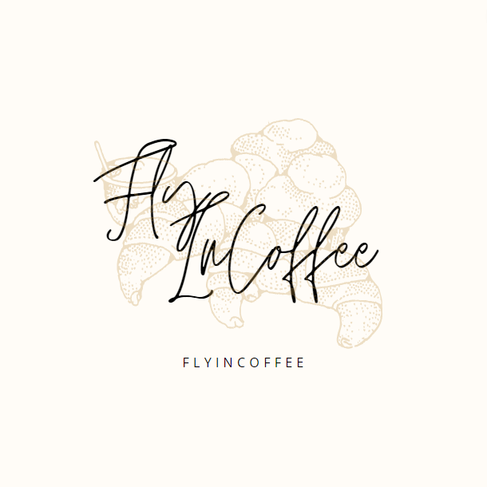

FlyInCoffee

Арабика
Роскошный сорт арабика обладает богатым ароматом, вкус напитка получается насыщенным и мягким.
Робуста
Королевский сорт робуста содержит почти в два раза больше кофеина, чем арабика. Это придает кофе насыщенный, слегка горьковатый привкус.
Копи лувак
Любители экзотики оценят кофейные зерна сорта копи лувак, которые получают благодаря индонезийским циветтам. Эти зверьки, похожие на мангустов, поедают спелые кофейные плоды — зерна при этом не перевариваются. Проходя по пищеварительному тракту, зерна приобретают специфический вкус.

Аромат кофейных зерен
Теперь ясно, почему мы так любим запах свежемолотого кофе. В каждом кофейном зерне содержится примерно 800 различных вкусовых и ароматических соединений — специи, травы, орехи, овощи, цветы и фрукты. Искусство приготовления кофе заключается в том, чтобы раскрыть богатство вкуса и аромата каждого кофейного зерна. Проходя через молотый кофе, вода извлекает максимум растворимых веществ, от которых зависит вкус и аромат конечного напитка.
Правило пятнадцати минут
Через 15 минут молотый кофе теряет примерно 60 % аромата.
Наши рекомендации:
• Храните кофейные зерна в герметичной упаковке и не подвергайте их воздействию света и влаги.
• Используйте кофейные зерна в течение 6–8 недель после обжарки.
• Всегда перемалывайте кофе непосредственно перед приготовлением.
FlyInCoffee
Контакты:
m.chayka.v@gmail.com
+380635478177